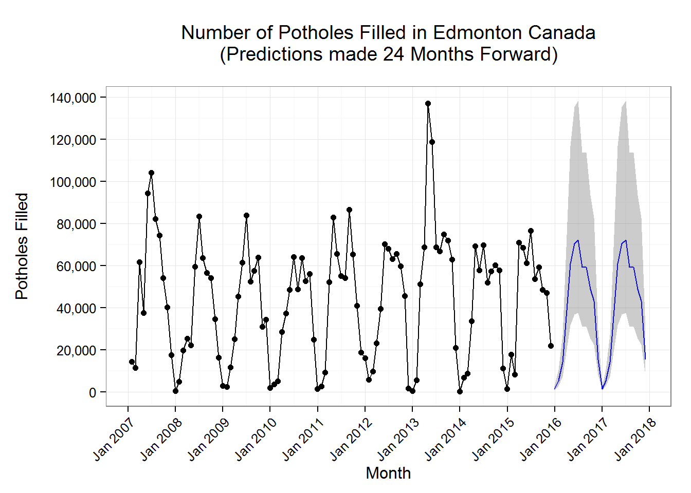

The city of Edmonton, capital city of Alberta Province in Canada, fills roughly 528,634 potholes each year. Pothole repair activity varies seasonally and is highly dependent on weather. A time-series model can be created to estimate at certain points in the year how many potholes are estimated to be filled.
Below is a plot showing a 24 month forward-looking monthly forecast of potholes filled. The model is an exponential smoothing state space model that automatically selected a model with Additive errors, no trend, Additive seasonality, and no trend damping. A Box-Cox transformation was used with \(\lambda\)=.0001 to ensure a forecast lower bound that is non-negative. The R code to implement model fitting was:
ets(time_series, lambda=.0001)
The pothole package includes a model object: pothole_model and a scoring function: pothole_predict that predicts the monthly number of potholes filled in the city of Edmonton. For more detail the source code that generated the model can be viewed at createmodel.R.
To call the pothole_predict function with curl using basic JSON RPC:
curl https://{your_opencpu_server_address}/pothole/R/pothole_predict/json \
-H "Content-Type: application/json" \
-d '{
"input" :
[
{
"month":"2016-01-01"
},
{
"month":"2016-02-01"
},
{
"month":"2016-03-01"
}
]
}'The scoring function was designed to accept json data as well as a .csv file as input. The example below illustrates batch scoring using .csv files for both input and output. The .csv file must contain 1 column for each required scoring parameter (example dataset).